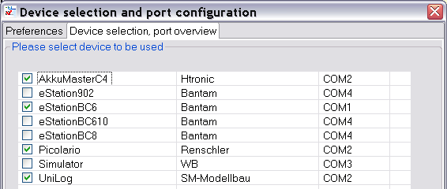
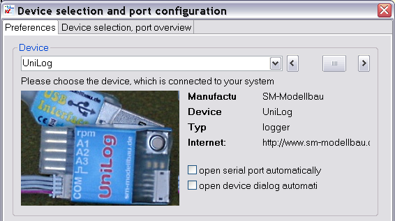
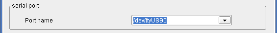
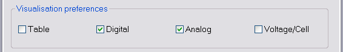
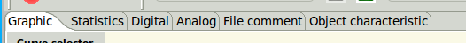
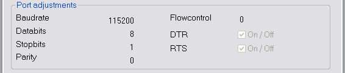

The Device Selection Dialog
Using the device selection dialog the devices are chosen which are available for the application. The device selection and port overview all devices are listed which are found by available device properties XML file in the "Devices" directory.

The selection of the active device will be done with the "Preferences" tab.

The selection of the active device can be done in several places on this tab. First place is the combo box direct above the device picture or with the slider at right hand side of the combo. The picture of the just selected device will be shown. Additional information related to the device is shown at the right hand side of the picture. Direct underneath this device info two selections are available to configure device specific behavior regarding device dialog and communication port.
Hint : Another possibility selecting the active device is using the next-/previous- device buttons in the tool bar.
Underneath the device picture the serial port must be selected. Is there only one serial port available at the current system this port will be selected for communication purpose automatically. The pictures below showing a port selection with COM4 using a Windows system and a port of a serial to USB adapter of a GNU/Linux system /dev/ttyUSB0.


With the “visualization preferences” group the visibility of some application tabs can be configured. Some of this selections have significant influence to the runtime. Switching of the table view update can reduce execution time dramatically if big data collections are in use. Big data collections make the table view more unclear than a small one.


The check boxes in the middle, Digital and Analog, are used mainly for live data measurements and have less sense for devices without this capability. If a device does not have live data capability or data are red from file the end values of the curve are displayed. The visualization of single cell voltages makes only sense for device with the capability to show this, mainly Lithium battery charger or balancer.

At the lower area the serial communication parameters are displayed without the possibility to change it. Required changes can only be done by editing the device properties XML directly.